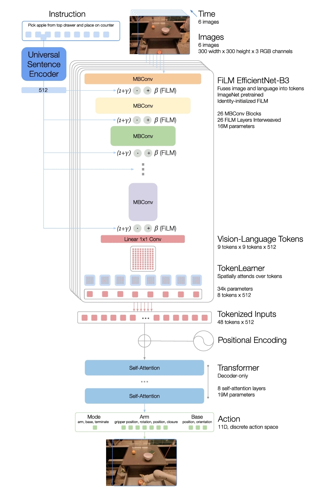
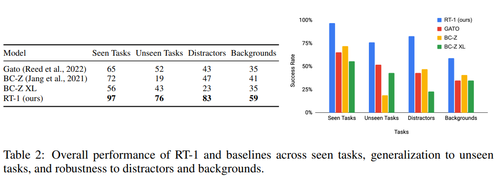
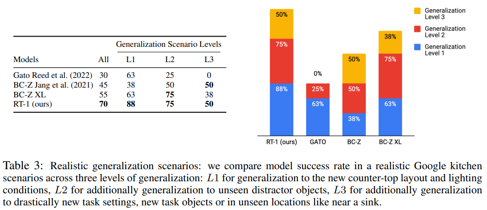
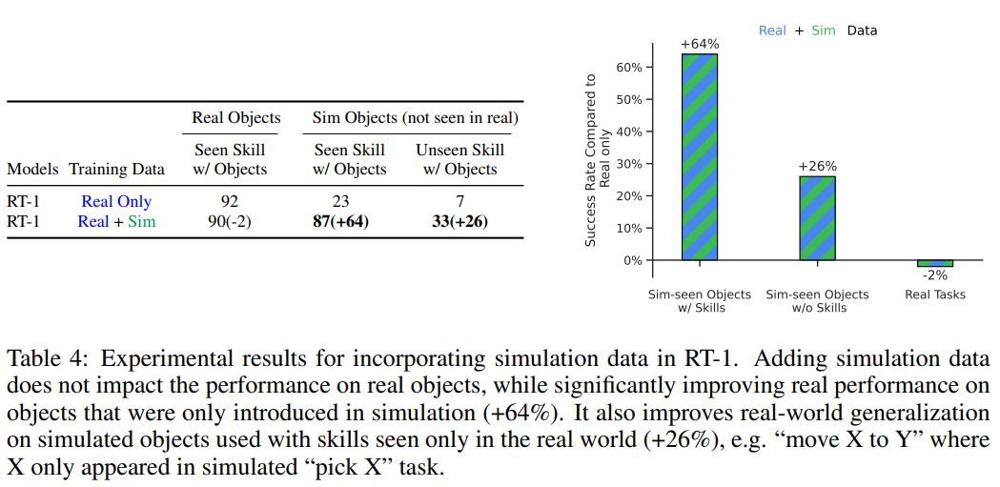
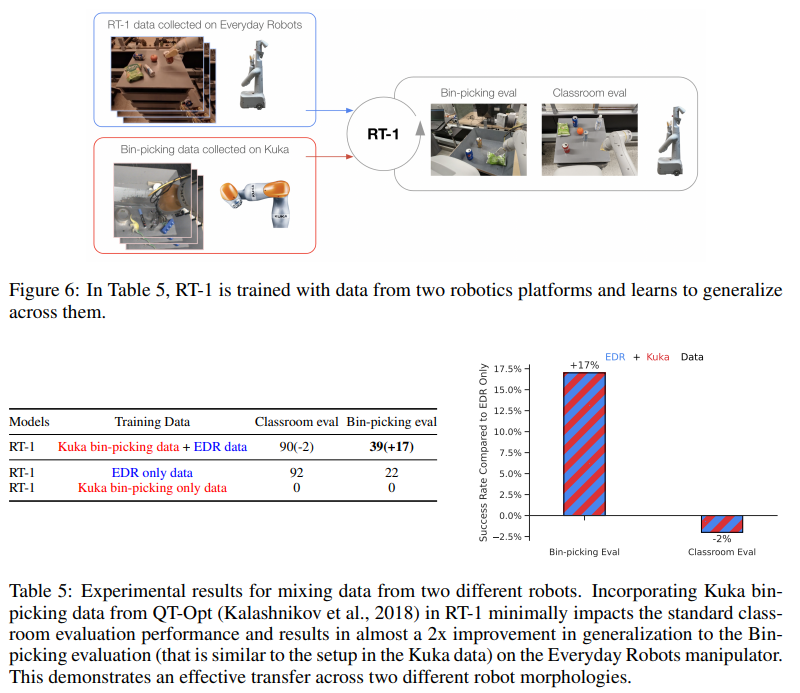
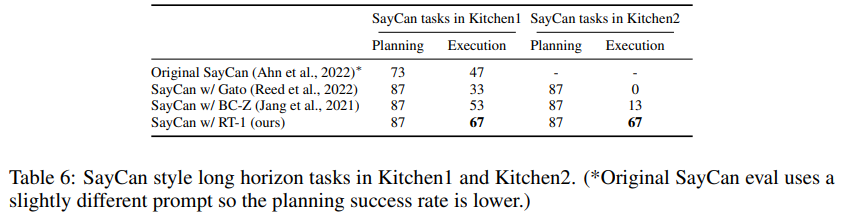
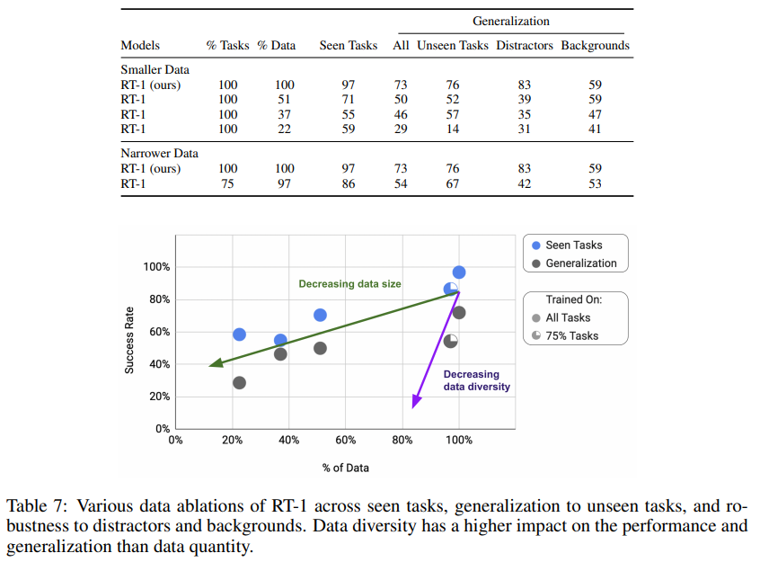

VLA_1. RT-1: Robotics Tramsformer for Real-world Control at Scale
Introduction
End-to-end robotic learning such as imitation or RL, collects task-specific data. Since robotic datasets might require engineering-heavy operation or expensive human demonstrations, so removing the need for task-specific datasets is more critical in robotics. The goal is
Can we train a single, capable, large multi-task backbone model on data consisting of a wide variety of robotic tasks?
Model

1. Image tokenization
a. EfficientNet-B3
RT-1 tokenizes 6 images by using EfficientNet-B3. Unlike GATO and ViT, we do not patchify the images into visual tokens prior to Transformer backbone. Instead flatten the output feature map from the EfficientNet into 81 visual tokens which are passed on to the later layers of the network.
b. Universal Sentence Encoder & FiLM
We should make the language instruction allow extraction of task-relevant image features early on. The instruction is embedded by Universal Sentence Encoder. Then this embedding is used as input of identity-initialized FiLM layers. Note that FiLM layer extracts task-relevant information from image features based on the given instruction: , where x is a feature image. FiLM layer updates ( layer) and ( layer) to learn instruction information relative to a image. Since if FiLM layer is initialized randomly, then pre-trained weight of EfficientNet is disrupted, so we initialize and as zero(identity-initialized). Therefore FiLM layer acts as identity at first and preserves the function of pre-trained weights. MBConv uses an inverted bottleneck structure of resNet that receives narrow-channel inputs, expands channels internally for rich computation, and outputs back to a narrow channel. This preserves compressed information in low-dimensional spaces while minimizing information loss through rich internal representations(MobileNetV2).
2. TokenLearner
TokenLearner is an element-wise attention module that maps a large number of tokens into a much smaller number of tokens.
3. Transformer
After TokenLearner, there are 8 tokens and these are concatenated with the other images in history, so forming 48 tokens. The Transformer is a decoder-only sequence model.
Experiments
There are 4 experimental criteria. 1. Seen task performance 2. Unseen task generalization 3. Robustness: Distractor and background robustness 4. Long-horizon scenarios
1. Generalization to Unseen Tasks and Environments

This generalization is due to natural language conditioning.
From L1 to L3, additional generalization is assigned. This result shows that RT-1 perform well on more realistic instructions.2. Generalization across Heterogeneous Datasets
a. Simulation data

The simulation data is never seen in the real world for robot.b. Different robot data

We evaluate the bin-picking tasks with the Everyday Robots(EDR). We can see that performance of EDR with only Kuka bin-picking data is 0%. Thus it is difficult to transfer a behavior from another robot morphology. However, mixing the data form both robots allows RT-1 to infer the correct actions of EDR robot when faced with the states observed by Kuka robots.3. Performance on Long-Horizon Scenarios

We execute RT-1 in the SayCan framework. SayCan is a robotic framework that combines an LLM for high-level task planning ("Say") with a low-level policy for execution ("Can") to complete long-horizon tasks.4. Data Size and Diversity

We can see that performance declines steeply when data diversity(%tasks) decreases compared to when data size(%data) decreases. Thus the data diversity is more essential than data quantity.Limitations
- It is an imitation learning method
- Generalization to new instructions is limited to the combinations of previously seen concepts
- It cannot handle a dexterous set of manipulation tasks.